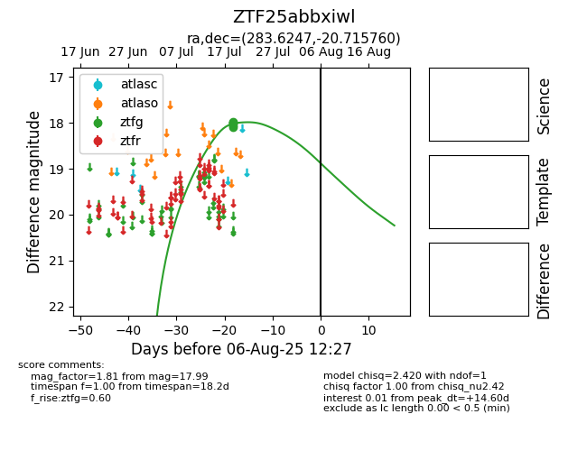

Target ZTF25abbxiwl at 2025-08-06 17:07, see:
FINK: fink-portal.org/ZTF25abbxiwl
Lasair: lasair-ztf.lsst.ac.uk/objects/ZTF25abbxiwl
ALeRCE: alerce.online/object/ZTF25abbxiwl
alt names
ZTF25abbxiwl (ztf,fink)
coordinates:
equatorial (ra, dec) = (283.6247,-20.71576)
galactic (l, b) = (14.6423,-9.92816)
photometry
last ztfg=17.99
6 ztfg detections
